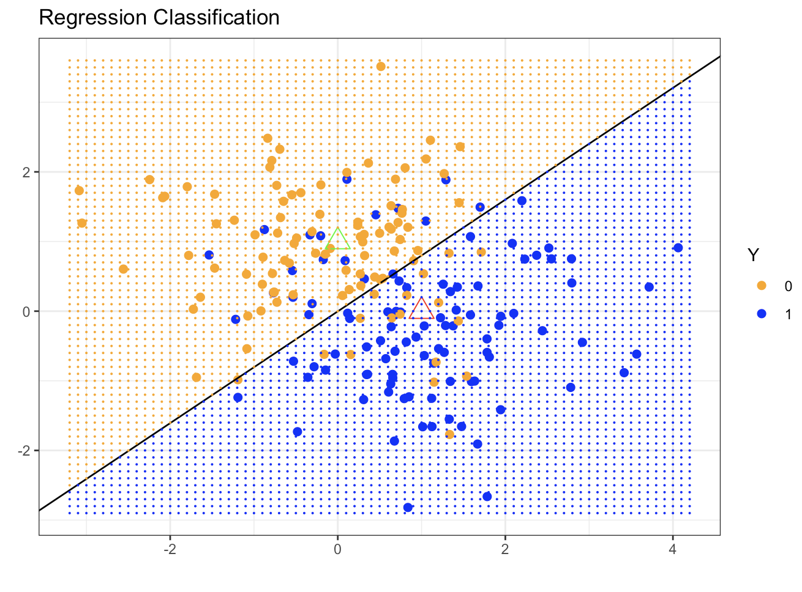
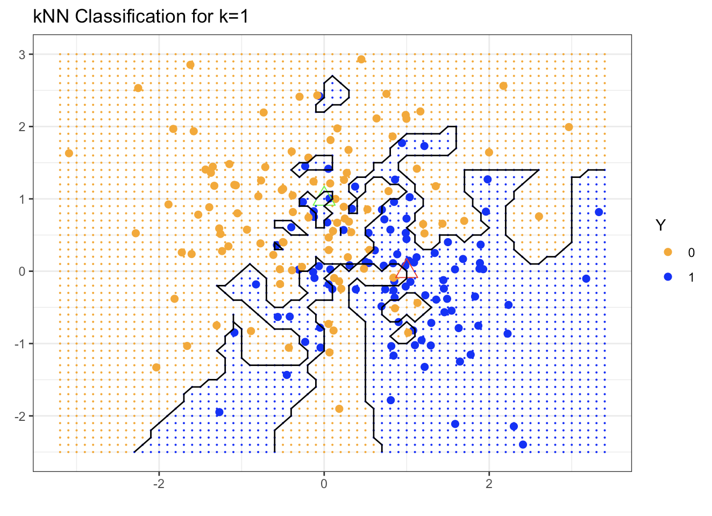
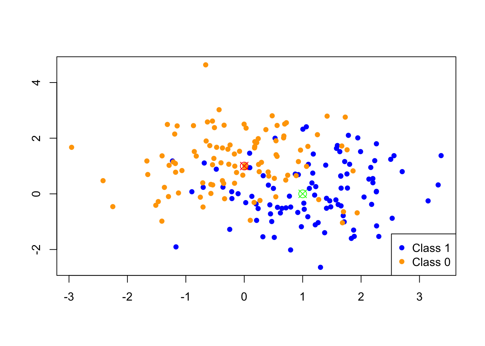
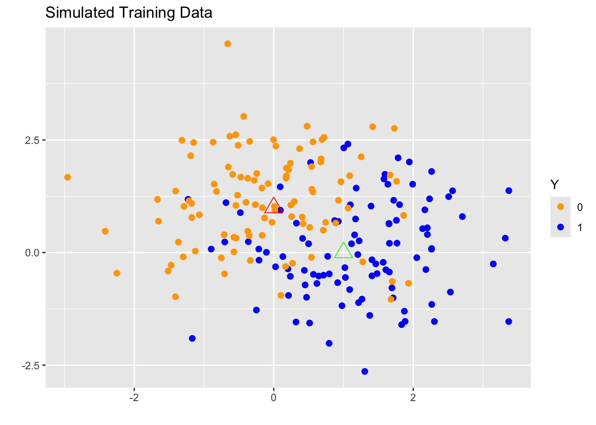
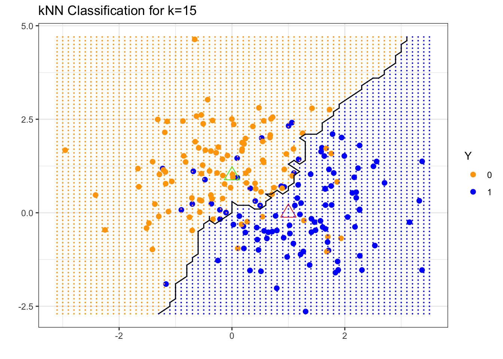
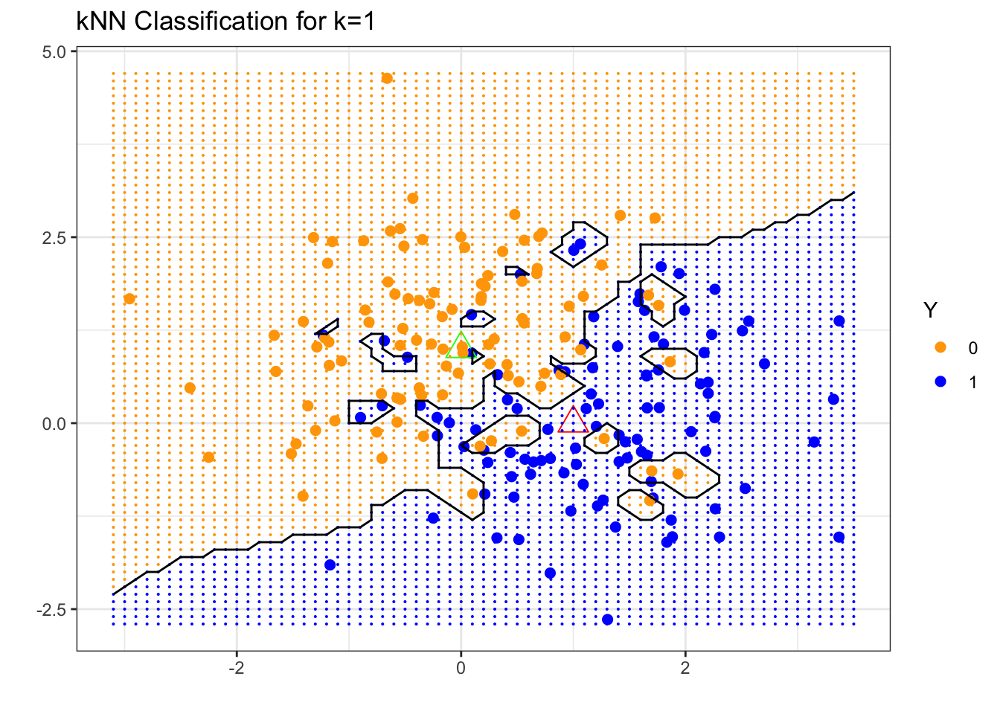
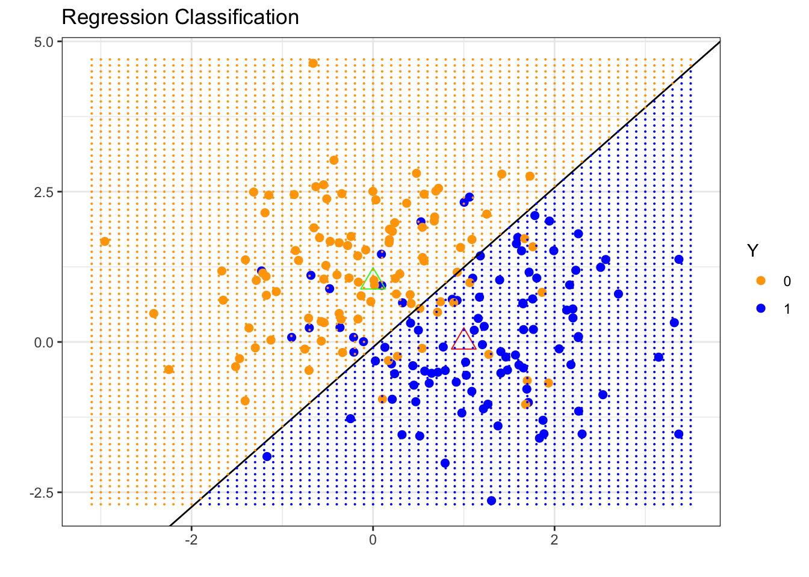
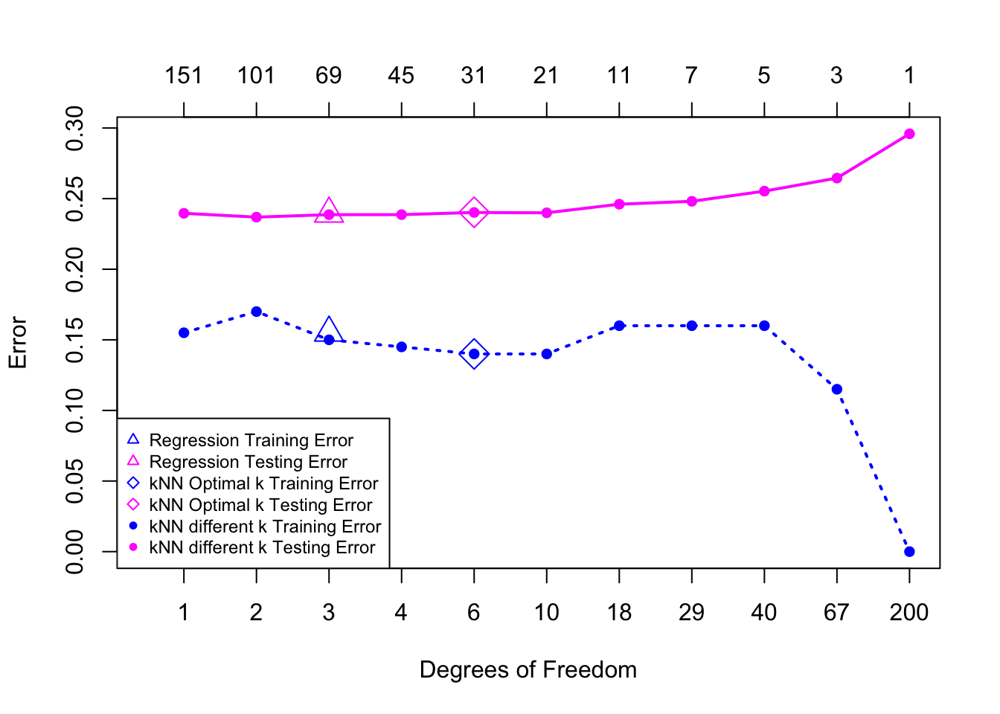

1.5 Two Toy Examples: \(k\)NN vs. Linear Regression
Before we wrap up the introduction, we will review two simple supervised learning examples
(i) \(k\)-Nearest Neighbors (\(k\)NN)
(ii) Linear Regression
and will examine their performance and understand the bias-variance trade-off.
1.5.1 \(k\)-Nearest Neighbors
In the \(k\)-Nearest Neighbors (\(k\)NN) method, we use observations in the training set that are closest to \(\mathbf{x}\) to form \(\mathbf{y}\). Specifically, the \(k\)-Nearest Neighbor fit for \(\hat{y}\) is \[\hat{\mathbf{y}}(\mathbf{x}) = \frac{1}{k} \sum_{x_i \in N_k(\mathbf{x})} y_i\] where \(N_k(\mathbf{x})\) is the neighborhood of \(\mathbf{x}\) defined by the \(k\) closest points \(x_i\) in the training sample. In a regression context the \(k\)NN fitted \(\mathbf{\hat{y}}\) predicts \(\mathbf{y}\) via a local average, while in the classification context \(k\)NN returns the majority vote in \(N_k(\mathbf{x})\) or a probability calculated on the frequencies in \(N_k(\mathbf{x})\). What can be challenging in the \(k\)NN approach is tuning \(k\), the neighborhood size, and determining the metric to define the neighborhood.
The choice of \(k\) is directly linked to the complexity of the method which is roughly equal to \(n/k\).
When \(k=1\), the prediction at \(x_i\) is exactly \(y_i\) which means that we have zero training error.
When \(k=n\), every neighborhood contains all the \(n\) training samples, so the prediction is the same no matter \(x\).
The default metric to define the neighborhood is the Euclidean distance: \[d\bigl( \mathbf{x}, \tilde{\mathbf{x}} \bigr) = \sum_{j=1}^{p} w_j \bigl( x_j - \tilde{x}_j \bigr)^2,\] where we would like to learn the \(w_j\)’s from the data.
1.5.2 Linear Regression
Given a vector of inputs \(\mathbf{x}^T = (x_1, x_2, \ldots, x_p)\), we approximate \(Y\) via a linear function \[f(\mathbf{x}) \approx \beta_0 + \sum_{j=1}^{p} x_j \beta_j\] Our goal is to estimate the parameters \(\beta_j\) using the Least-Squares (LS) method by minimizing the Residual Sum of Squares (objective function) \[\min_{\beta_0, \ldots, \beta_p} \sum_{i=1}^{n} \Bigl( y_i - \beta_0 - x_{i1}\beta_1 - \ldots - x_{ip} \beta_p \Bigr)^2\] The solution is easy to obtain (both in R/Python and analytically under certain assumptions) and the fitted value for the \(i\)th input \(x_i\) is given by \[\hat{y}_i = \hat{y}(x_i) = x_i^T \hat{\beta}\] We leave the details to be discussed in Week 2.
Linear Regression in a Classification Context
We can apply linear regression on classification problems with \(Y=0 \text{ or } 1\). In this case, we predict \(Y\) to be 1 if the LS prediction \(f(x)\) is bigger than 0.5, and 0 otherwise. This approach has drawbacks. First of all, the squared difference \(p(\mathbf{x}) = \Bigl(y_i - f(\mathbf{x}_i) \Bigr)^2\) is not a good evaluation metric, since considering a linear function \(f(\mathbf{x})\) may result in values outside \([0,1]\). Therefore, when we are in this context a Logistic regression is the gold standard according to which \[\log \frac{p(\mathbf{x})}{1-p(\mathbf{x}) } \approx \beta_0 + \sum_{j=1}^{p} x_j \beta_j\]
More on this in Week 8.
1.5.3 Simulated Binary Classification Example
Consider a response variable \(G\) that takes two values (0 – BLUE or 1 – ORANGE). In our simulation, we generate 200 such values; 100 in each class, and our goal is to use both regression and \(k\)NN to classify the data. The code behind the simulation and the plots can be found here.
We start by fitting a linear regression model to the simulated data. In a naive approach, we treat the response is a continuous variable. Hence, the continuous fitted values \(\hat{Y}\) are converted to a fitted class variable \(\hat{G}\) according to the following rule: \[\hat{G} = \begin{cases} & Blue, \text{ if } \hat{Y} > 0.5\\ & Orange, \text{ otherwise } \\ \end{cases} \]
Our classification example is in two dimensions which means that the decision boundary (the boundary that separates the orange from the blue region) is a straight line.

Specifically, the fitted decision boundary is a straight line (the black line in the plot) defined by \(\mathbf{x}^T \hat{\beta} = 0.5\). Based on our simulation, we know that the blue region should be above the black fitted regression line, while the orange region should be below the black fitted regression line. We observe that there are many misclassifications on both sides of the decision boundary.
The regression line seems to be very smooth and too rigid when it comes to classifying the data. On the other end of the spectrum, we have the \(k\) Nearest-Neighbor approach. So, for the same simulated data, the nearest neighbor method will use the observations in the training set closest in input space to \(X\) to form \(\hat{Y}\).
Using a 15-nearest-neighbor averaging of the binary coded response such that \(\hat{Y}\) is the proportion of blue’s in the neighborhood, then we assign \[\hat{G} = \begin{cases} & Blue, \text{ if } \hat{Y} > 0.5\\ & Orange,\text{ otherwise } \\ \end{cases} \]
In this case, the predicted class is chosen by majority vote amont the 15 nearest neighbors.

We observe that the decision boundary separating the blue from the orange region is far more irregular than before and sensitive to local clusters of blue and orange dots. As a result, we have fewer misclassified observations than before. Remember that we can tune the neighborhood size. So, if we take the extreme scenario in which \(k=1\) and we only consider one neighbor, we have

This results in a much rougher decision boundary with hardly any misclassified data. However, is this the ideal choice? The answer is no, but in order to understand the reason we need to consider the generalization error.
Up to now, we have used the same data for training and comparison purposes. As a result, a method like \(k\)NN has seemingly 0 error for \(k=1\). In order to make fair comparisons, we should consider another data set, independent of the one used to fit the data, so that we can compute the test/generalization error for both methods.
In the plot below, we compare the misclassification error on the testing data set as a function of the degrees of freedom. In other words, we compare several \(k\)NN fits (for different \(k\)s) and the regression fit. The testing set here contains 10,000 observations.

The magenta curve is the test error and the blue curve is the training error for the \(k\)NN classification for different \(k\)s. In our simulated example, we used a 5-fold cross validation method to identify the optimal \(k\). The results for the optimal \(k\) in \(k\)NN are denoted with a diamond. The results for linear regression are the magenta and blue triangles at 3 DFs (the DFs were determined based on the dimension of the linear model we fitted).
The regression method has the advantage of it being linear with only \(p=3\) parameters to estimate which means that it has a relatively low variance. However, the linearity assumption seems to be quite restrictive for the classification problem under consideration, which means that we expect to have high bias.
On the other hand, the \(k\)NN approach has no assumption of the shape of the underlying \(f\), maybe except some local smoothness. This flexibility results in overfitting and a low bias (we saw that in the extreme case of \(k=1\)).It can be shown that as \(k, n \rightarrow \infty\) such that \(k/n \rightarrow 0\), \(k\)NN is consistent. At the same time, the method has higher variance with the extreme case of when the number of parameters for \(k\)NN is roughly \(n=k\), which goes to \(\infty\) in order to achieve consistency.
1.5.4 Code for the Examples in the Lectures
We replicate one of the examples in the ESL book to illustrate the differences between the two simplest prediction methods for binary outcomes: the Regression method and the \(k\)-Nearest-Neighbors method.
1.5.4.1 Simulation
- The generated data consist of a binary classification with two classes, labeled as
0and1. - The features are two-dimensional.
Class 1data points are generated from a Gaussian distribution with mean \(\mu_1\) and variance \(\sigma^2\), i.e. \(X_{1,1}, \ldots, X_{1,n_1} \sim \mathbb{N}\bigl( \mu_1, \sigma^2 \bigr)\).Class 0data points are generated from a Gaussian distribution with mean \(\mu_2\) and variance \(\sigma^2\),i.e. \(X_{01}, \ldots, X_{0n_2} \sim \mathbb{N}\bigl( \mu_0, \sigma^2 \bigr)\).- In total, we generate 200 training samples (\(n=100\) for each class), and we assign labels to the training data (100
Class 1and 100Class 0). - Similarly, we generate 10,000 test samples.
1.5.4.2 Code for the Simulation
Set the model parameters for the simulation:
p = 2; ## No. of parameters
sigma = 1; ## St. Dev for the Normals (common)
mu1 = c(1, 0); ## Vector of means for the first Normal
mu0 = c(0, 1); ## Vector of means for the second Normal
Generate \(n\) i.i.d. (independent and identically distributed) samples from each normal to create the training data set.
n = 100; ## Training Sample Size for each Normal
## rnorm(2*n*p) generates 2*n*p N(0,1) random variables.
## matrix(rnorm(2*n*p), 2*n, p)*sigma generates a 2n-by-p matrix of two N(0, sigma^2) each of length 2*n.
## Adding matrix(rep(mu1, n), nrow=n,byrow=TRUE) to each column of the previous matrix
## shifts each of the columns to generate the Normals with means mu1 or mu0.
## Note that both mu0, mu1 are 2-dimensional.
traindata = matrix(rnorm(2*n*p), 2*n, p)*sigma +
rbind(matrix(rep(mu1, n), nrow=n,byrow=TRUE),
matrix(rep(mu0, n), nrow=n, byrow=TRUE))
# dim(traindata)
## We generate the 0 or 1 labels.
Ytrain = factor(c(rep(1,n), rep(0,n)))
Generate \(N\) test samples in a similar way:
N=10000;
testdata = matrix(rnorm(2*N*p), 2*N, p)*sigma+
rbind(matrix(rep(mu1, N), nrow=N,byrow=TRUE),
matrix(rep(mu0, N), nrow=N, byrow=TRUE))
Ytest = factor(c(rep(1,N), rep(0,N)))1.5.4.3 Visualization of the Simulated Data
This section also serves as a review of plotting in R.
We visualize the data we generated – those in the traindata matrix.
In the figure generated by the code below, points from two groups are colored in orange and blue, respectively; the two centers are plotted as +, and a legend is added to explain the association of each color.
1.5.4.4 Using the default R functions for plotting
## Create an empty plotting area: The axes are the two vectors of normals generated,
## each one saved in a column of the `traindata` matrix.
## The following line creates an empty plot, since we used the option type="n"
## We do this so that we can color-code the data.
plot(traindata[,1], traindata[,2], type="n", xlab="", ylab="");
# Add the "Class 1" points - in blue color.
points(traindata[1:n, 1], traindata[1:n,2], pch=16, col="blue");
# Add the "Class 0" points - in orange color
points(traindata[(n+1):(2*n),1], traindata[(n+1):(2*n),2], pch=16, col="orange");
# Add the centers for class 1
points(mu1[1], mu1[2], pch=13, cex=1.5, col="green");
# Add the centers for class 0
points(mu0[1], mu0[2], pch=13, cex=1.5, col="red");
legend("bottomright", pch = c(16,16), col = c("blue", "orange"),
legend = c("Class 1", "Class 0"))
1.5.4.5 Using the ggplot2 R library
In this section, we present an alternative way to construct the plot above via the ggplot2 package. The ggplot2 package allows us to create elaborate plots. More information can be found here: http://ggplot2.org/
# install.package("ggplot2")
library("ggplot2")
## The input in a `ggplot` function can only be a data.frame
## In our case the data is a matrix, so we convert them to data.frames here:
mytraindata = data.frame(X1=traindata[,1], X2=traindata[,2], Y=Ytrain)
## The ggplot output is an object which is saved in training.scatter.
## In this object, we can later add --and plot-- additional features.
training.scatter = ggplot(mytraindata, aes(X1, X2)) + ## creates the empty plot
geom_point(aes(colour=Y), size=2) + ## adds the points color-coded by the labels in Y
scale_color_manual(values = c("orange", "blue")) + ## change the default colors
## Use geom_point to add the centers (as before)
geom_point(data=data.frame(X1=mu1[1], X2=mu1[2]), aes(X1, X2), colour="green", shape=2,size=5) +
geom_point(data=data.frame(X1=mu0[1], X2=mu0[2]), aes(X1, X2), colour="red", shape=2, size=5) +
ggtitle("Simulated Training Data") + ## add a title
labs(x = "", y="") ## remove axes labels
plot(training.scatter)
1.5.4.6 \(k\) Nearest-Neighbors Method
To apply the \(k\)-NN method, we need to choose \(k\). In the example below, we use the neighborhood sizes suggested from the textbook (ESL). We also apply and plot the results for \(k=1\) and \(k=15\).
library("class")
neighbor_size = c(151, 101, 69, 45, 31, 21, 11, 7, 5, 3, 1); ## These are different k's to try.
m = length(neighbor_size); ## needed to run our for-loop below.
train.err.knn = rep(0,m); ## vector to store training error
test.err.knn = rep(0, m); ## vector to store testing error
## knn is the R function that runs the kNN method. Output is a factor.
for( j in 1:m){
Ytrain.pred = knn(traindata, traindata, Ytrain, k=neighbor_size[j]) ## predictions for training data
train.err.knn[j]= sum(Ytrain != Ytrain.pred)/(2*n) ## mis-classification training error
Ytest.pred = knn(traindata, testdata, Ytrain,k=neighbor_size[j]) ## predictions for testing data
test.err.knn[j] = sum(Ytest != Ytest.pred)/(2*N) ## mis-classification testing error
}
cbind(train.err.knn, test.err.knn) ## matrix containing the train and test errors## train.err.knn test.err.knn
## [1,] 0.155 0.23960
## [2,] 0.170 0.23690
## [3,] 0.150 0.23865
## [4,] 0.145 0.23865
## [5,] 0.140 0.24020
## [6,] 0.140 0.23995
## [7,] 0.160 0.24605
## [8,] 0.160 0.24810
## [9,] 0.160 0.25530
## [10,] 0.115 0.26455
## [11,] 0.000 0.295901.5.4.7 5-Fold Cross-Validation for Choosing optimal \(k\)
A systematic way to determine the optimal value for the neighborhood size, \(k\), in a range of values is the so-called 5-fold Cross-Validation (CV) method. Essentially, the method selects the \(k\) value that minimizes the CV error. In a nutshell, the 5-fold CV error for each \(k\) is a sum of 5 prediction errors, one corresponding to each fold.
In the code below, we have an outside loop from 1 to 5 (the folds), and an inside loop from 1 to \(m\) (all possible values for \(k\)). Inside the loop, we use 80% (i.e., four folds) of the data as training and predict on the 20% (i.e., one fold) holdout set.
## In this chunk of code, we use the same vector of k's as above - the neighbor_size vector of size m
## Initialize a vector cv.error to store the CV error for each k.
cv.error = rep(0,m);
id = sample(1:(2*n),(2*n), replace=FALSE);
fold = c(0, 40, 80, 120, 160, 200)
for(i in 1:5)
for(j in 1:m){
## ith.fold = rows which are in the i-th fold
ith.fold = id[(fold[i]+1):fold[i+1]];
tmp = knn(traindata[-ith.fold,], traindata[ith.fold,], Ytrain[-ith.fold], k=neighbor_size[j]);
cv.error[j]=cv.error[j] + sum(tmp != Ytrain[ith.fold])
}
## Find the optimal k value based 5-fold CV
k.optimal = neighbor_size[order(cv.error)[1]]
## Error of KNN for the k is chosen by 5-fold CV
Ytrain.pred = knn(traindata, traindata, Ytrain, k=k.optimal)
train.err.knn.CV = sum(Ytrain != Ytrain.pred)/(2*n)
Ytest.pred = knn(traindata, testdata, Ytrain,k=k.optimal)
test.err.knn.CV = sum(Ytest != Ytest.pred)/(2*N) 1.5.4.8 Least Squares Method
We run a regression of Ytrain vs. the traindata, and we classify the results as follows:
\[\hat{Y} = \begin{cases} & 1, \text{ if } fitted(Y) > 0.5\\
& 0, \text{ if } fitted(Y) \leq 0.5
\end{cases} \]
## Run a regression using the lm function
## Ytrain is a factor, so we need to convert it to a numeric vector to run the lm
RegModel = lm(as.numeric(Ytrain)-1 ~ traindata)
## Compute the \hat{Y} for training
Ytrain_pred_LS = as.numeric(RegModel$fitted > 0.5)
## Compute the predicted values for testing data and then the \hat{Y}
Ytest_pred_LS = RegModel$coef[1] + RegModel$coef[2] * testdata[,1] + RegModel$coef[3] * testdata[,2]
Ytest_pred_LS = as.numeric(Ytest_pred_LS > 0.5 )
## Cross-tab for training data and training error
table(Ytrain, Ytrain_pred_LS); ## Ytrain_pred_LS
## Ytrain 0 1
## 0 84 16
## 1 15 85train.err.LS = sum(Ytrain != Ytrain_pred_LS) / (2*n);
## Cross-tab for test data and test error
table(Ytest, Ytest_pred_LS); ## Ytest_pred_LS
## Ytest 0 1
## 0 7471 2529
## 1 2257 77431.5.4.9 Illustration of the Results
First, we illustrate the classification achieved by each method.
1.5.4.10 kNN Classification for two k’s: k = 15 and k = 1
## Grid Using kNN Classification: We first define the boundaries for the grid
x.min = round(min(mytraindata$X1), digits=1)-0.1
x.max = round(max(mytraindata$X1), digits=1)+0.1
y.min = round(min(mytraindata$X2), digits=1)-0.1
y.max = round(max(mytraindata$X2), digits=1)+0.1
x.range = seq(from=x.min, to=x.max, by=0.1)
y.range = seq(from=y.min, to=y.max, by=0.1)
x.new = expand.grid(x.range, y.range)
names(x.new) = names(mytraindata[,-3])
## Basic scatterplot (same as before):
## this is used as a base to add the boundary and shaded areas
grid.plot = ggplot(mytraindata, aes(X1, X2)) +
geom_point(aes(colour=Y), size=2) +
scale_color_manual(values = c("orange", "blue")) +
geom_point(data=data.frame(X1=mu1[1], X2=mu1[2]), aes(X1, X2), colour="red", shape=2,size=5) +
geom_point(data=data.frame(X1=mu0[1], X2=mu0[2]), aes(X1, X2), colour="green", shape=2, size=5) +
labs(x = "", y="")
## Plot for k=15
knn.yhat.15 = knn(traindata, x.new, Ytrain, k=15)
knn.pred.15 = ifelse(as.numeric(knn.yhat.15)>0.5,"1","0")
knn.plotdata.15 = as.data.frame(cbind(x.new, knn.yhat.15))
knn.plot.15 = grid.plot +
theme_bw() + #remove grey background
geom_point(data=knn.plotdata.15, aes(x=X1, y=X2, colour=knn.yhat.15), size=0.05) +
geom_contour(data=knn.plotdata.15, aes(x=X1, y=X2, z=as.numeric(knn.yhat.15)), bins=1, color="black")+
ggtitle("kNN Classification for k=15")
plot(knn.plot.15)
## Plot for k=1
knn.yhat.1 = knn(traindata, x.new, Ytrain, k=1)
knn.pred.1 = ifelse(as.numeric(knn.yhat.1)>0.5, "1", "0")
knn.plotdata.1 = as.data.frame(cbind(x.new, knn.yhat.1))
knn.plot.1 = grid.plot +
theme_bw() +
geom_point(data=knn.plotdata.1, aes(x=X1, y=X2, colour=knn.yhat.1), size=0.05) +
geom_contour(data=knn.plotdata.1, aes(x=X1, y=X2, z=as.numeric(knn.yhat.1)), bins=1, color="black")+
ggtitle("kNN Classification for k=1")
plot(knn.plot.1)
1.5.4.11 Regression Classification
## Grid Using Linear Model Classification
RegModel = lm(as.numeric(Ytrain)-1 ~ traindata)
beta.hat = coef(RegModel)
## We use the same ranges for the grid as before
Reg.yhat = as.matrix(cbind(rep(1, nrow(x.new)), x.new)) %*% beta.hat ## predicted Y values
Reg.pred = ifelse(Reg.yhat > 0.5, "1", "0") ## convert numeric Y to factor
Reg.plot.data = cbind(x.new, Reg.pred)
## Basic plot is same as before, so now we add the regression boundary and classiffication results
reg.plot = grid.plot +
theme_bw() +
geom_abline(slope=-beta.hat[2]/beta.hat[3], intercept=(.5-beta.hat[1])/beta.hat[3],color="black") +
geom_point(data = Reg.plot.data, aes(x=X1, y=X2, color=Reg.pred), size=0.05) +
ggtitle("Regression Classification")
plot(reg.plot)
1.5.4.12 Plot the Performance and Compare the two Methods
Test errors are in magenta and training errors are in blue. The upper \(x\)-coordinate indicates the \(k\) values, and the lower \(x\)-coordinate indicates the degrees-of-freedom of the \(k\)NN procedures so that the labels are reciprocally related to \(k\).
The training and test errors for linear regression are plotted at \(df = 3\) (corresponding to \(k = (2n)/3\)), since the linear model has 3 parameters, i.e., 3 dfs.
The training and test errors for KNN with \(k\) chosen by CV are plotted at the chose \(k\) values.
plot(c(0.5,m), range(test.err.LS, train.err.LS, test.err.knn, train.err.knn),
type="n", xlab="Degrees of Freedom", ylab="Error", xaxt="n")
df = round((2*n)/neighbor_size)
axis(1, at=1:m, labels=df)
axis(3, at=1:m, labels=neighbor_size)
points(1:m, test.err.knn, col="magenta", pch=16)
lines(1:m, test.err.knn, col="magenta", lty=1, lwd=2)
points(1:m, train.err.knn, col="blue", pch=16)
lines(1:m, train.err.knn, col="blue", lty=3, lwd=2)
points(3, train.err.LS, pch=2, cex=2, col="blue")
points(3, test.err.LS, pch=2, cex=2, col="magenta")
points((1:m)[neighbor_size == k.optimal], train.err.knn.CV, col="blue", pch=5, cex=2)
points((1:m)[neighbor_size == k.optimal], test.err.knn.CV, col="magenta", pch=5, cex=2)
legend("bottomleft", pch = c(2, 2, 5, 5, 16, 16), col = c("blue", "magenta"),
legend = c("Regression Training Error", "Regression Testing Error", "kNN Optimal k Training Error", "kNN Optimal k Testing Error", "kNN different k Training Error", "kNN different k Testing Error"), cex=0.75)